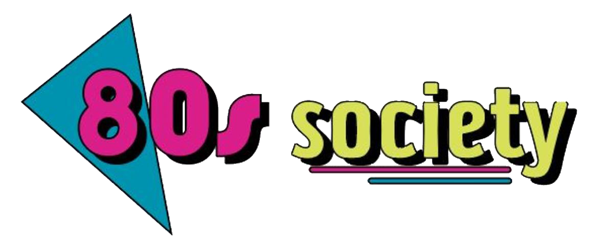

Like every Tuesday, November 26th at 7 PM at Union Way we will be holding our weekly 80s movie screening. This week’s choice is one of our “films of the month” recommendations: Dirty Dancing. In the summer of 1963, Baby, the protagonist, goes to a mountain holiday resort with her parents and sister. There, she meets dance teacher Johnny Castle, who teaches her how to move, and with whom she falls in love. But things don’t go as planned. Dirty Dancing's standing as one of the '80s most memorable teen movies is due as much to the phenomenon than the film itself. Virtually every twenty-something woman in the modern world watched it as a pre-teen and was won over by the film's sweet-but-not-schmaltzy vision of first love. Drinks and snacks will be available and the participation is free! Warning: explicit sexual scenes included.
As every first Friday of the month, November the 29th from 9 PM to 2 AM we will hold our 80s themed Disco night. The event will take place at ATIK and will feature 80s music all night long. Tickets are available online or can be bought directly on the venue and will cost £5 per person. Unfortunately, you will have to prove to be 18 or older since there will be alcoholic beverages available. Dressing up in neon clothing, leg warmers, shoulder pads, and Guess jeans isn’t obligatory but highly recommended!
Our weekly movie nights series continues on Tuesday the 3rd of December at 7 PM at Union Way with the notorious horror movie “The Shining”. In this classic 80s film Jack Torrance (Jack Nicholson) becomes winter caretaker at the isolated Overlook Hotel in Colorado, hoping to cure his writer's block. He settles in along with his wife, Wendy (Shelley Duvall), and his son, Danny (Danny Lloyd), who is plagued by psychic premonitions. As Jack's writing goes nowhere and Danny's visions become more disturbing, Jack discovers the hotel's dark secrets and begins to unravel into a homicidal maniac hell-bent on terrorizing his family. Drinks and snacks will be available and the participation is free! Warning: explicit graphic scenes included.
Friday 6th of December from 6 PM to 10 PM we will hold a Karaoke night at the Cheerz Bar on Exchange Street. The venue will be filled with 80s themed decorations and the menu will include exclusive drinks such as “Vynl Vodka” and “Disco lemonade”. The song choices will range from Madonna to Duran Duran and no singing skills are required! The entry is free, but we encourage to get some snacks and/or drinks to support the event, allowing us to organise more like this in the future! There is no age restriction, but you will have to show an ID if you decide to order any alcoholic beverage. Hope we’ll see you there!
Thanks to our dedicated member Shigeru Miyamoto, we managed to obtain an old Famicom console from the 1980s. Therefore we are happy to announce a Super Mario Bros Gaming event on Thursday the 12th of December from 5 PM to 7 PM on Union Way. No video gaming skill is required as this console will be new to most of us, therefore everyone is free to participate! 80s themed snacks and beverages will be offered for free during the event (vegan and gluten-free options will be available). There is no participation fee or age restriction, therefore we hope to see you there!
| M | T | W | T | F | S | S |
|---|---|---|---|---|---|---|
| 1 | 2 | 3 | ||||
| 4 | 5 | 6 | 7 | 8 | 9 | 10 |
| 11 | 12 | 13 | 14 | 15 | 16 | 17 |
| 18 | 19 | 20 | 21 | 22 | 23 | 24 |
| 25 | 26 | 27 | 28 | 29 | 30 |